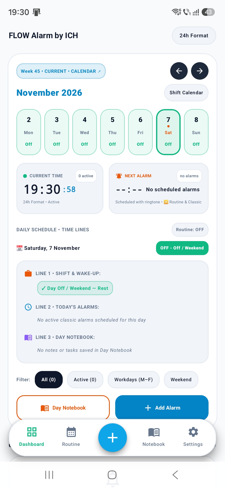
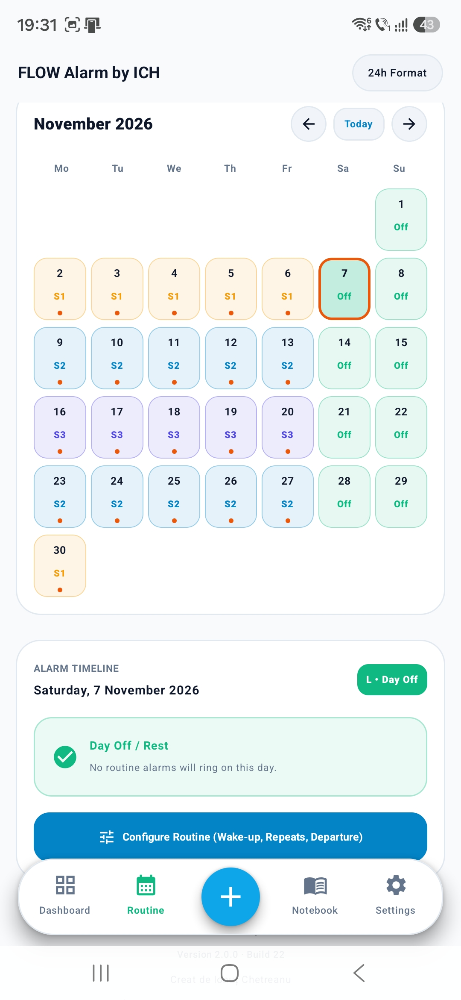
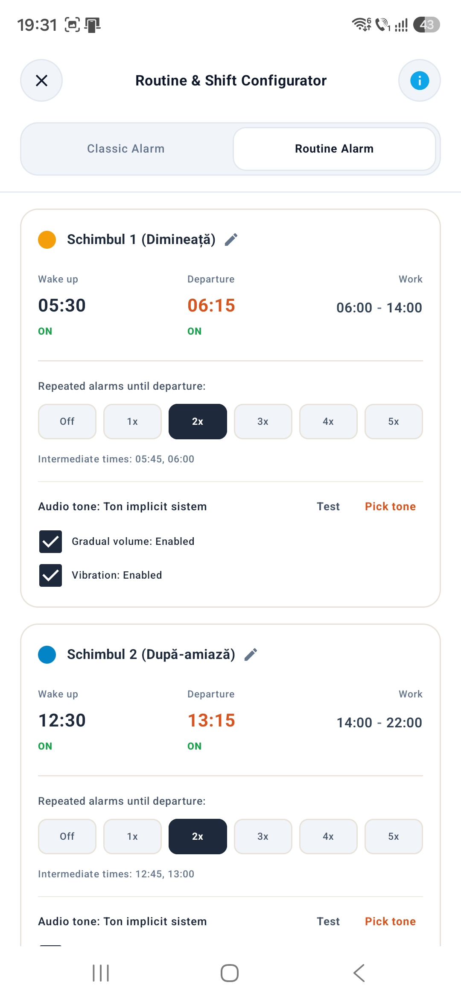
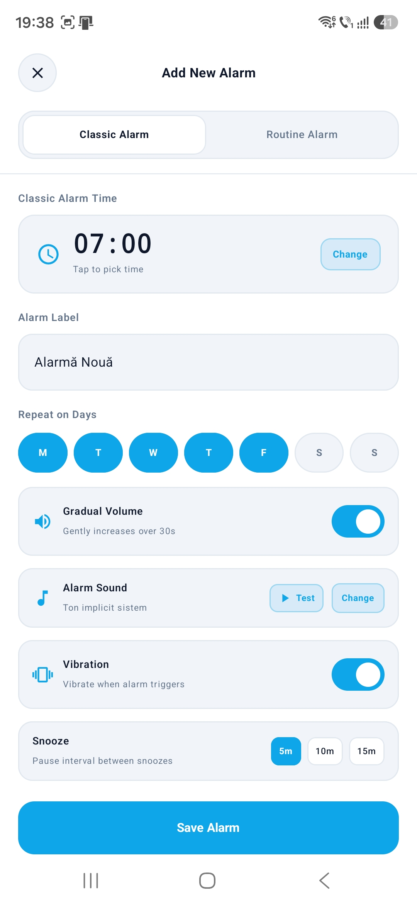
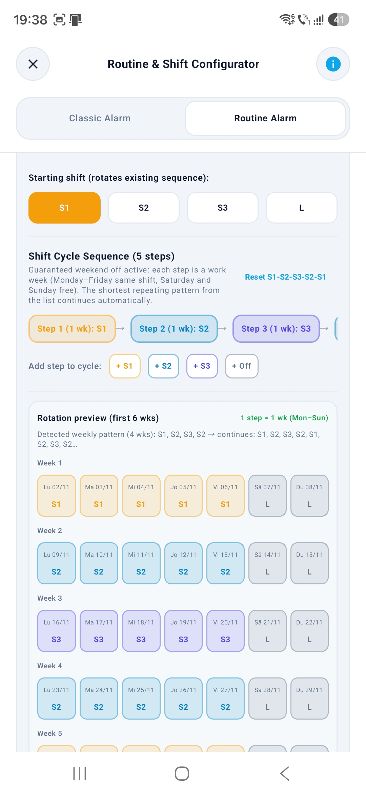
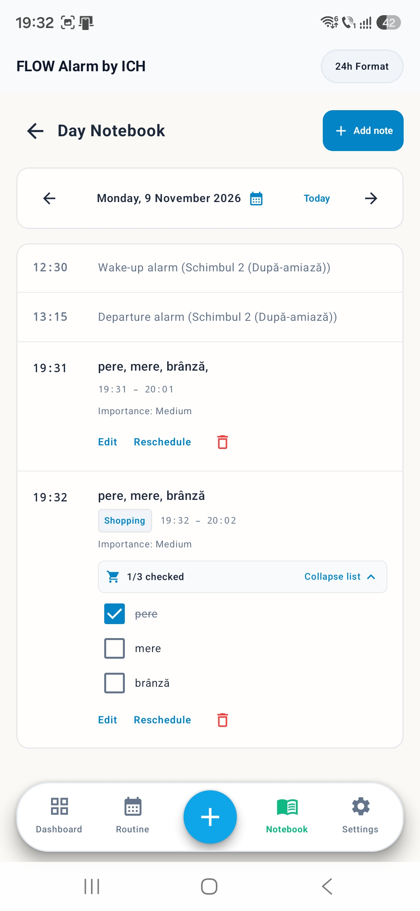

01
PRIVIRE DE ANSAMBLU
Panoul principal


Panoul reunește ora curentă, următoarea alarmă și informațiile zilei. Calendarul arată dintr-o privire schimburile și zilele libere, ca să poți vedea cum se așază programul tău.
Organizează-ți schimburile, alarmele și rutina zilnică într-un singur loc — fără să refaci programul de la zero în fiecare săptămână.
„M-am săturat să refac alarmele în fiecare săptămână.”
Lucrez în trei schimburi. Înainte de fiecare săptămână, îmi setam din nou alarmele și încercam aplicații complicate, doar ca să-mi organizez trezirea pentru muncă.
Am început FlowAlarm ca să-mi fac programul mai ușor de gestionat — și cu gândul că poate sunt și alți oameni care au nevoie de o soluție mai simplă și mai logică.
Povestea creatorului ↗Explorează ecranele principale ale FlowAlarm și vezi cum se leagă între ele programul, rutinele, alarmele și notițele tale.


Panoul reunește ora curentă, următoarea alarmă și informațiile zilei. Calendarul arată dintr-o privire schimburile și zilele libere, ca să poți vedea cum se așază programul tău.

Configurezi schimburile, orele de trezire și regulile ciclului tău de lucru. Previzualizarea te ajută să urmărești succesiunea săptămânilor, iar orele de muncă rămân informative și sunt folosite de Caietul Zilei.


Butonul + deschide configurarea unei alarme noi. Poți alege o alarmă clasică, cu oră și zile de repetare, sau poți configura alarma de rutină și ciclul de ture, în funcție de programul tău.

În Caietul Zilei poți păstra notițe și activități pentru o anumită dată. Orele programului de lucru ajută la orientare, astfel încât să-ți poți planifica ziua în jurul turei.
Aplicația poate calcula și informa. Tu rămâi cel care decide ce se schimbă.
FlowAlarm este în testare închisă prin Google Play. Am suficienți testeri pentru etapa aceasta și folosesc perioada de test pentru a vedea cum este utilizată aplicația și ce feedback primesc.
GRUPUL DE TESTARE ESTE COMPLET PENTRU ACEASTĂ ETAPĂDupă ce înțeleg mai bine nevoile oamenilor care testează versiunea gratuită, vreau să dezvolt și o variantă Pro. Am câteva idei, dar funcțiile ei nu sunt stabilite încă.
PLAN ÎN DEZVOLTARE · DETALIILE VOR FI ANUNȚATEFlowAlarm este un proiect personal construit pas cu pas. Pe măsură ce versiunea de test evoluează, voi actualiza aici informațiile despre produs.
„FLOW observă.
Tu decizi.”